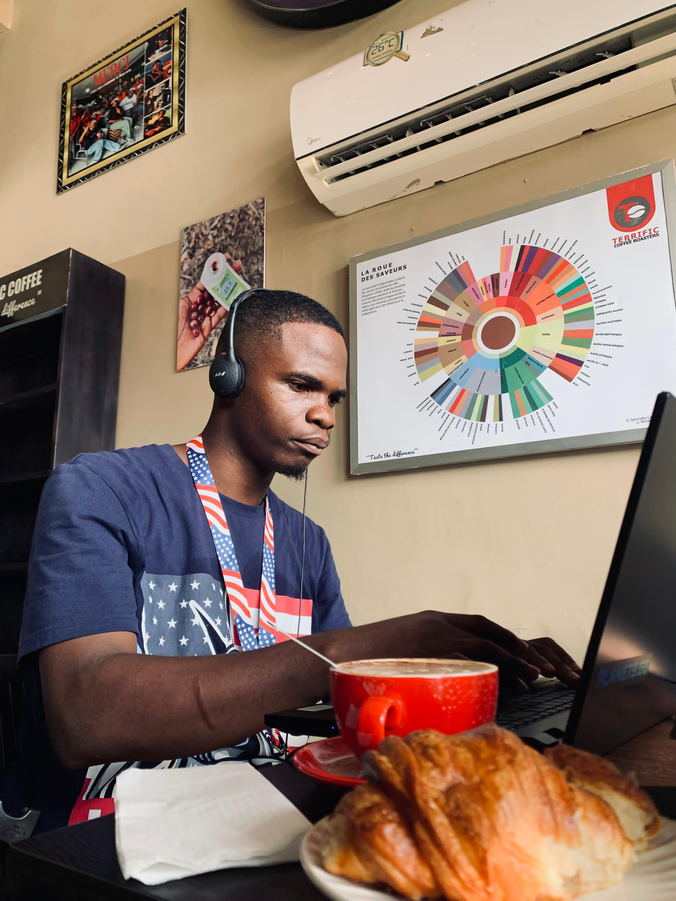

Code & Grow
About Me

Hello I'm Paul Alain Nyoum. I was born in Cameroon a Country in Africa. I come from a home of 5 including: my dad,mom, My elder brothers and I. My hobbies include: coding, playing football, watching anime, listening to music.
My passion for coding was revealed after a senior instructed me to reflect on the path I want to take for my future. He advised me to go down the IT path and study emerging technologies like AI (artificial intelligence) or Datascience in order for me to be ready for the future changes in the world.
After giving it a serious thought, I decided follow the IT path. Since I decided myself on what to choose between AI or DS, I decided to learn fundamental programming skills. I started by learning Python, but i did not go in to depth and skipped many important topics.
One day I tried using AI models like ChatGPT and Claude for some assignements. I was amazed but the result produced, since then I solely relied on AI for any programming related work. I never bothered to really grasp the skills, Instead I kept on deceiving myself that I was doing well, but soon enough I realized I was weak and Pathetic.
One advantage from all this was the quantity and quality of information I had gathered about platforms, ressources, tools. I knew exactly what I needed to become great, all which was left was implementation. This is the reason why i decided to start back from square 1 learning the basic of the web and HTML and going up to become a skilled future AI engineer.
Education
I did my primary and early secondary education in the south-west region of Cameroon. Later, I moved to the economic capital which is Douala where I completed my high school. In my first year of college, I got into the public university, but the atmosphere there wasn't favorable for what I wanted to achieve.
Later on, I decided to enroll in a private university for my 2nd year of college. After my second year, then came the idea of traveling to a foreign country to further my studies,Currently. I grasped the opportunity, and presently I am a student at Guru Nanak University, Hyderabad India. I am pursuing a Bachelor's degree in Computer Application.
My academic journey has provided me with a solid foundation in programming, algorithms, and software development principles. I have also taken courses in data structures, databases, and web development, which have further fueled my passion for technology and coding.
Accomplishments
Till date, I haven't accomplished any major thing, but for now I have a lot of dreams wish i hope to fulfill by God's grace. I will do my best to become the best. I will not only work hard, but I will do well. I will make all those who believed in me proud.